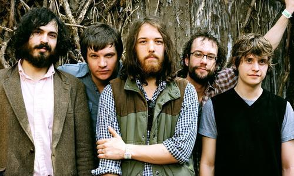

Fleet Foxes (members: Robin Pecknold, Skyler Skjelset, Casey Wescott, Christian Wargo, Morgan Henderson; 2006 - Present) is an American indie folk band formed in Seattle, Washington The band came to prominence in 2008 with the release of their second EP, Sun Giant, and their self-titled debut album. Both received much critical praise and reviewers often noted the band's use of refined lyrics and vocal harmonies.
